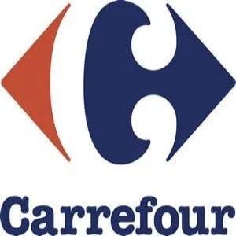

Dirigida por Martin Scorsese, esta película es un retrato
psicológico del veterano de Vietnam Travis Bickle (De Niro),
un taxista solitario que se enfrenta al aislamiento y la
violencia en la decadente Nueva York de los años 70. La frase
"You talking to me?" se convirtió en un clásico del cine. Es
un análisis profundo de la alienación y la locura.
En esta obra maestra de Francis Ford Coppola, De Niro
interpreta a un joven Vito Corleone, mostrando cómo ascendió
al poder en los bajos fondos de Nueva York. Su actuación le
valió un Premio Oscar al Mejor Actor de Reparto. La película
entrelaza magistralmente el pasado y el presente de la familia
Corleone.
Otra colaboración con Scorsese, esta biografía sigue la vida
del boxeador Jake LaMotta, interpretado por De Niro, quien
ganó un Oscar al Mejor Actor por su papel. La película explora
los altibajos de LaMotta, desde su éxito en el ring hasta su
autodestrucción debido a su temperamento violento y su
inseguridad.
Dirigida también por Scorsese, De Niro interpreta a Jimmy
Conway, un mafioso calculador en esta obra maestra del cine
criminal. La película sigue la vida de Henry Hill (Ray Liotta)
y su ascenso en el mundo del crimen organizado, con
actuaciones electrizantes de todo el elenco. Es un retrato
fascinante de la vida en la mafia.
En este épico drama criminal, De Niro interpreta a Sam "Ace"
Rothstein, un gerente de casino en Las Vegas que intenta
manejar el negocio mientras enfrenta la corrupción, la
violencia y las tensiones con su esposa (interpretada por
Sharon Stone). La película, dirigida por Scorsese, ofrece una
visión cruda del poder y la decadencia en el mundo de los
casinos controlados por la mafia.
Follow the latest trends
With our daily newsletter
Supermercados
Top 3 mejores supermercados de España
Mercadona
Desde 1993 Mercadona basa todas sus decisiones en su Modelo de
Calidad Total que busca satisfacer por igual y con la misma
intensidad a los cinco componentes de la empresa: “El Jefe”, como
internamente denomina al cliente, El Trabajador, El Proveedor, La
Sociedad y El Capital.

Carrefour
Somos especialistas en electrónica de consumo, informática, moda,
deportes, electrodomésticos, juguetes etc. Contamos con más de
400.000 productos a tu servicio y cada día ampliamos un poco más
el surtido de productos que ofrecemos para darte un mejor
servicio.
Lidl
Nuestro modelo de negocio se caracteriza por ofrecer los productos
de mayor calidad al mejor precio del mercado, a través de una
apuesta decidida por la sostenibilidad y la creación de valor
compartido para la sociedad española.